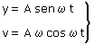
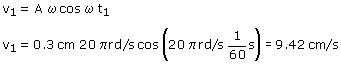

Supongamos que inicialmente el móvil estaba en el origen moviéndose hacia el extremo positivo:

Parámetros
A = 0.3 cm, ω = 2πf = 20π rad/s
Aplicación: (1/60 s después de iniciar el movimiento)
Datos: t1 = 1/60 s, Incógnitas: v1
